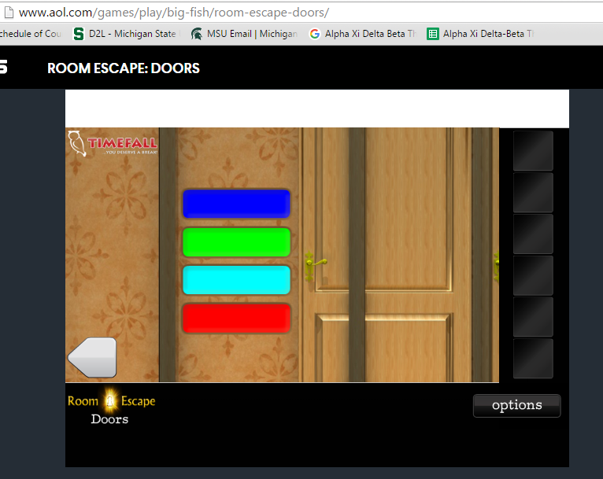
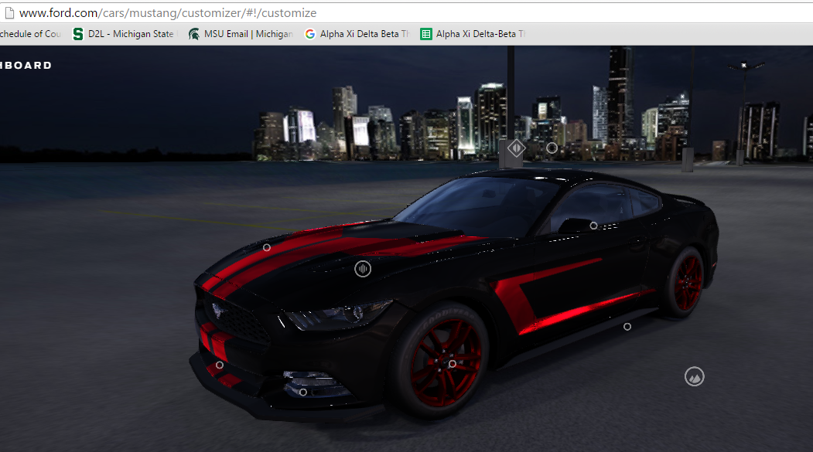
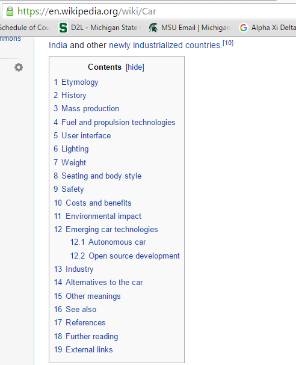
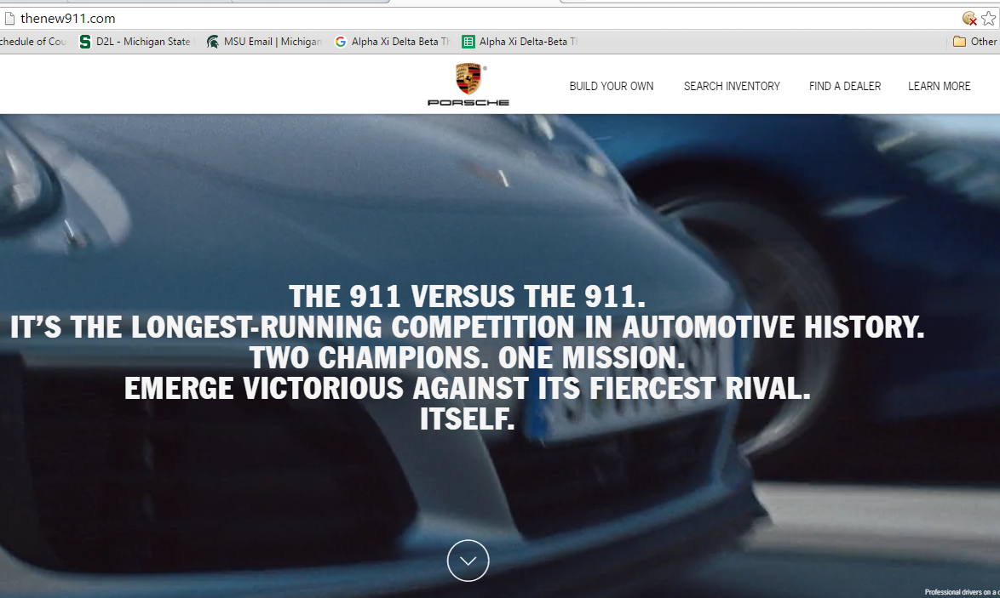

5 Principles
Affordance

I picked this website for affordance because in the website your objective is to "escape" the room by finding differnt clues around the room to help you open the doors. Once you find the proper clue and click on the door it swings open. I chose this screen shot because here is shows that when you first click a door it slides to the right to reveal a clue. This to me is an example of affordance because the object is doing what you would expect it to do in real life.
Mapping

I chose this website as an example of mapping, because this page of the website allows you to customize your car any way you want. The controls allow you to move the car all over so you can see every angel of your car. I think this is a good exapmle of mapping because the controls effect the website very much and make it very user friendly.
Chunking

I picked this website as an example of chunking because all wikipedia pages have a content panel which makes it very easy for users to find the exact content they are looking for on the page. I think this represents chunking very well because it would be very overwhelming for the user if the looked something up and they got all the info thrown in their face. Thanks to this menu, they can pick the important parts they want to know.
Hicks Law

I chose this website to represent Hicks Law because it gives the user to option to choose one of the three different order options. I think this image is a good exapmle of Hicks Laws because it does a good job at decreasing the number of decisions for the user by giving them three simple options with explinations under them. They did/do they heavy lifing for the customer with this webiste.
Signal-to-Noise Ratio

I picked this website as an exapmle of signal-to-noise ratio because this website does a good job of eliminating unnecessary distractions on the page and keeps all the content focused on the new car. I chose this image for the example because it shows how this page keeps it interesting but simple for the user. It doesn't make the user think to much because it's fairly straight forward as to what this page is going to be about. (on the website the background is a moving picture)